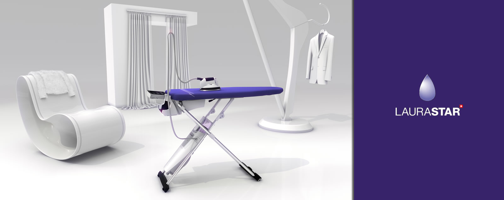
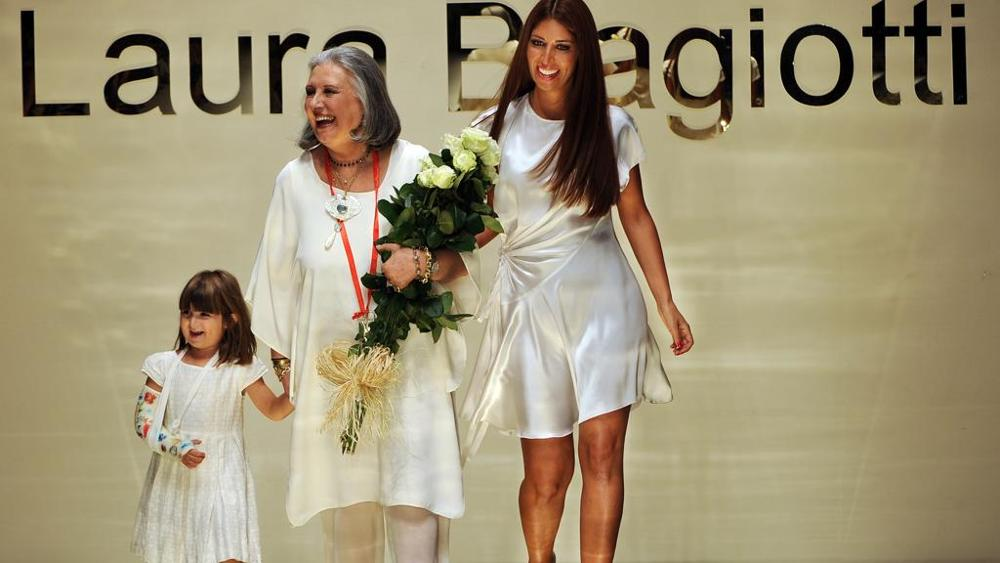
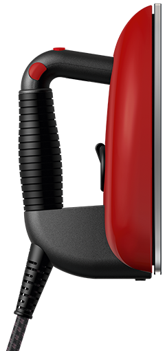
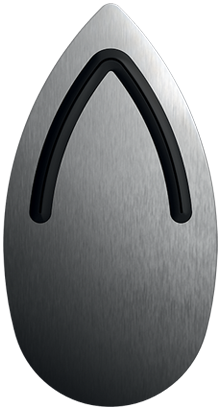
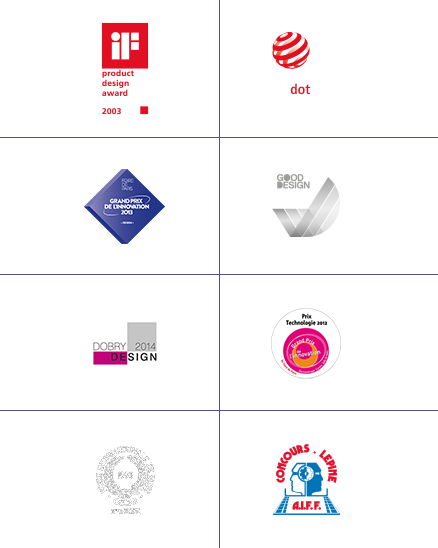

История LauraStar
Швейцарские разработки и идеальный результат
Компания Laurastar была основана людьми, любящими и умеющими ухаживать за роскошными тканями. Их увлечение привело к созданию уникального мира, в котором соединились красота и швейцарские технологии, способные подчеркнуть и преобразить ваш стиль.
Торговая марка LauraStar была названна в честь известного итальянского дизайнера Лауры Биаджотти (Laura Biagiotti), которая приобрела огромную популярность благодаря своим мягким и максимально удобным моделям женской, мужской и детской одежды из кашемира.
Более 35 лет опыта создания совершенства
История LauraStar началась в маленькой швейцарской деревушке Шатель-Сен-Дени в начале 80-х годов, когда Жан Моней познакомился с итальянским инженером. Один из них ставил во главу угла красоту, другой стремился сделать общедоступной технологию, которая до этого была предназначена только для профессионального использования. Первым изобретением нового швейцарского бренда была гладильная доска с мощным встроенным парогенератором: она гарантировала непревзойдённый результат и максимальную простоту использования в домашних условиях. Это был мгновенный успех, который длится до сих пор.
Трепетное отношение к одежде в сочетании с постоянным усовершенствованием и внедрением современных технологий стали профессиональным кредо LauraStar. При этом цель всегда оставалась неизменной — сделать уникальные разработки доступными для всех.
Современное исполнение
Laurastar существует, чтобы полностью изменить методы глажения. Швейцарские исследователи и инженеры непрерывно разрабатывают инновации, чтобы вы могли пользоваться самыми современными технологиями у себя дома.
Профессиональная подошва, эксклюзивный парогенератор, гладильная доска - Laurastar усовершенствовала всю гладильную систему, чтобы украсить вашу одежду и предложить вам исключительную простоту использования.
Швейцарское профессионализм
Компания Laurastar гордится тем, что ее продукция соответствует всем стандартам качества, точности и эстетики, благодаря которым Швейцария заслужила всемирную репутацию самого надежного производителя. Профессиональный утюг, активная 3D-подошва и мелкодисперсный пар — эти уникальные изобретения разработаны лучшими специалистами для вашего ежедневного комфорта. Швейцарские инженеры ежедневно работают для того, чтобы предвосхищать завтрашние тенденции.
Награды за эксклюзивный дизайн
На протяжении более 35 лет исследователи, инженеры и дизайнеры Laurastar направляли всю свою энергию на то, чтобы их проекты удовлетворяли вашему стремлению к красоте и совершенству. Этот образ мысли и действий был отмечен международными наградами за дизайн и технологические разработки.
В 2002 году яркий зеленый парогенератор Steamup получил награду RedDot Best Design, a в 2003 году награду iF Design Award получил не менее привлекательный жёлтый парогенератор Steamax. В 2013 году, на пике своей популярности, компания получила награды RedDot Product Design Award, GOOD DESIGN и премию Foire de Paris за коллекцию Laurastar Lift.
Все особенности продукции Laurastar — дизайн, цвет, эргономика — разработаны с мыслями о красоте и простоте и продиктованы вашим стремлением к совершенству.
Оценка швейцарских инноваций
Работа инженеров также была высоко оценена мировыми экспертами. В 1990 году компания Laurastar получила премию Innovation Oscar за гладильную систему Premium, в 2001 году —серебряную медаль на конкурсе Lépine за систему Magic, в 2012 году — награду Technology Innovation Award за модель Laurastar S7a. Теперь все эти уникальные разработки доступны каждому из вас.